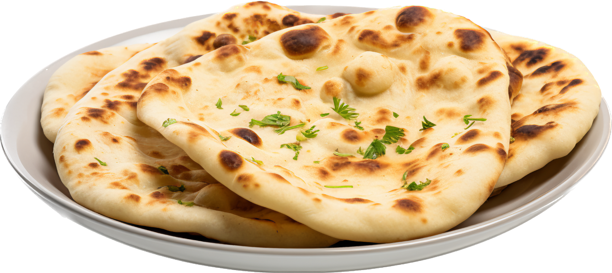

TAFTAN:
-
Kulcha is a Persian term for a disc-shaped loaf of leavened bread.[1] In India, this term is commonly used for regular English bread (which is disc-shaped).[2]
Origin and terminology
The term kulcha is Persian and describes a disc-shaped loaf of bread, bun or even biscuit.[1][3] However, in India this term came to be associated with round breads popularized during British colonial period.[4] In some parts of India, naan or tandoori parantha is often confused with kulcha.
Recipe
Kulcha is made from maida flour, water, a pinch of salt and a leavening agent (yeast or old kulcha dough), mixed together by hand to make a very tight dough. This dough is covered with a wet cloth and left to stand for an hour or so in a warm place. The result is a slight leavening of the dough but not much. The flour is kneaded again by hand and then rolled out using a rolling pin into a flat, round shape. It is baked in an earthen clay oven ("tandoor") until done. When baked, it is often brushed with butter or ghee, although this is not necessary. It is then eaten with any Indian curry. In particular, a spicy chickpea curry known as chole is the dish of choice for being eaten with kulcha.[5]
Variations
In the first variant, instead of using water to knead the dough, milk or yogurt can be used; this results in the dough becoming softer and more rubbery. This type of kulcha is known as doodhia kulcha (milk kulcha). Leavening is often greater if yogurt is used.
This variant of kulchas are not stuffed but made plain and eaten with a curry which can be either vegetarian or meat-based.
The second variant are the kulchas stuffed with fillings that were served during the period of Mughals and Nizams in their Darbars.[6] For example, in Awadh region, Awadhi Kulcha is served with Nahari, a mutton based dish.[7]
Nowadays, these are sold in restaurant and shops. Jammu's Kaladi Kulcha which is made with traditional Dogra Cheese i.e. Kaladi Cheese is one of the most-loved street foods in Jammu.[8] Kaladi cheese is sautéed in oil on a pan, cooked till brown in colour from both sides and stuffed between roasted kulchas.[9]
In Amritsar, Kulcha term is often confused with tandoori parantha or naans which have become popular in Amritsar in recent decades.[10]
In entire North India, range of stuffings, including paneer (cottage cheese), potatoes, onion and other vegetables are used to stuff these kulchas.
External image
image icon A slidshow of Hyderabadi Kulcha / Naan / Sheermaal preparation images. Published on Flickr
In Pakistan, kulcha breads are largely eaten in certain parts of the Hazara and Pothwhar regions, where they are a popular breakfast item.[11]
See also
List of Indian breads
List of Pakistani breads
References
Steingass, Francis; Richardson, John; Johnson, Francis (1892). A Comprehensive Persian-English Dictionary: Including the Arabic Words and Phrases to be Met with in Persian Literature, Being Johnson and Richardson's Persian, Arabic, and English Dictionary Rev., Enl., and Entirely Reconstructed. Allen.
Tripathi, Vaishali (9 August 2016). Indian desi tadka. Onlinegatha. p. 26. ISBN 9789385818004. Tandoori Roti, naan and kulcha, originated in Punjab region, are delicious meals of Delhi.
"Definition of کلیچه". Dehkhoda Lexicon Institute and International Center for Persian Studies. Retrieved 4 April 2023.
Manfield, Christine (4 November 2021). Christine Manfield's Indian Cooking Class. Simon and Schuster. ISBN 978-1-76085-244-3.
Haldar, Suman (14 December 2021). "Amritsari Kulcha". one in abillion blog. Retrieved 15 December 2021.
Hussein, Sadaf (19 August 2017). "Hidden Secrets of Amritsari Kulcha". Food and Streets by Sadaf. Archived from the original on 11 January 2020. Retrieved 5 October 2019.
Brien, Charmaine O' (15 December 2013). The Penguin Food Guide to India. Penguin UK. ISBN 978-93-5118-575-8.
"Kaladi Experience". Daily Excelsior. 5 December 2020. Retrieved 27 March 2021.
Hussein, Sadaf (10 March 2021). "How kulchas from India and Pakistan act as a great unifier". Mintlounge. Retrieved 27 March 2021.
"Kulcha- the everlasting love of Amritsaris". Amritsar Online. 8 April 2019. Archived from the original on 8 January 2020. Retrieved 5 October 2019.
Naeemu, Waqas (2 November 2012). "Traditional foods: In Pindi, a place for Kashmiri bread lovers". Express Tribune. Retrieved 14 November 2012.
Back to Home Page